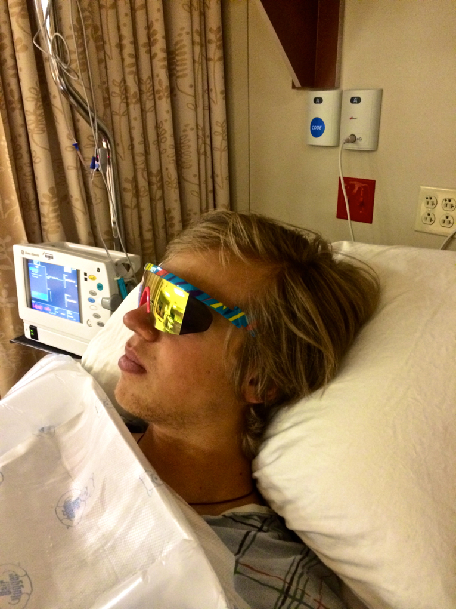
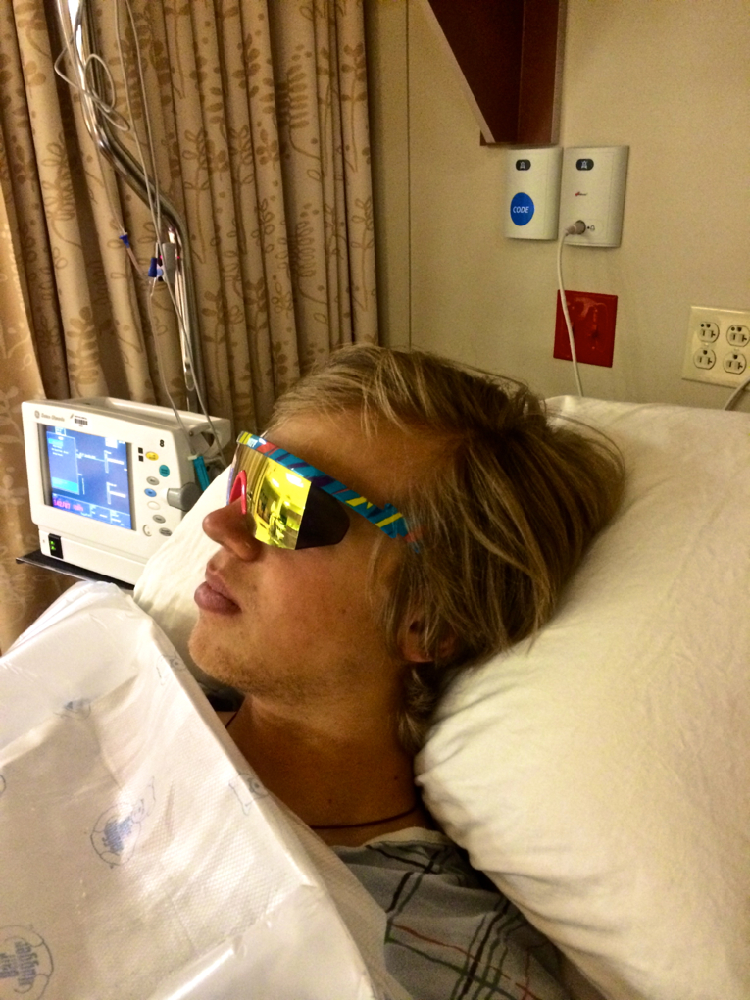
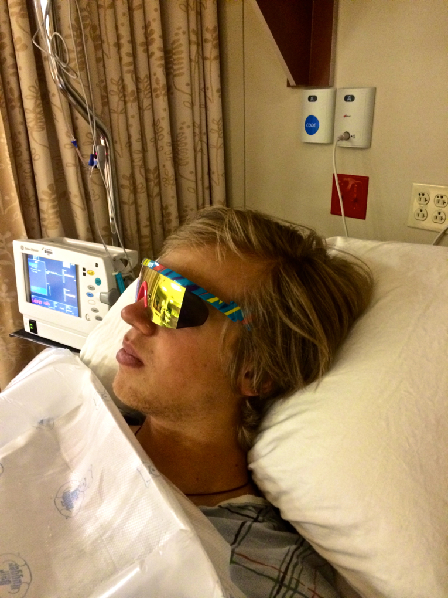

Understanding
 

In the spring of 2012 founder, Chuck Mumford, was traveling to the Teton Mountains for a ski touring adventure. Sunglasses being a very important part of touring trips, Chuck had his current "high-end sport" sunglasses in tow which quickly broke and left him looking for more. He started developing Pit Vipers in the Spring of 2012 as a rugged product that could be shot, sat on, shoved in pockets, run over, and mostly maintain their sun and wind bucking ability.

If you want to join the cool kids check out this website website Get intro-duced